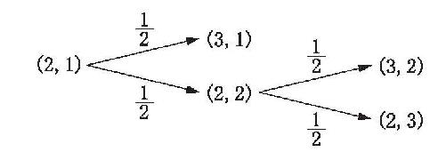
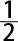
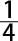
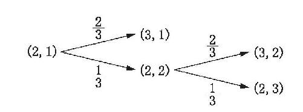

来自赌桌上（在本书中赌将是一个反复出现的主题）的迫切需求，促使概率的数学理论得到了发展。在游戏结果中会出现一些令人不解的模式，尤其是在掷骰子的时候，于是人们就很自然地想到去寻找可以理解它们（最好是能够预测它们）的某种数学上的手段。此外，还有一个问题是说，如果一组打赌游戏不得不提前停止的话，玩家之间如何公平地分配赌资。如果我有一个较好的机会战胜你，那么我将比你得到赌资总额中更多的钱，这似乎是公平的。但是，我们怎样才能测量我们获胜的相对机会呢？我们应该如何分配赌资呢？
中译本边码：12
概率理论的发展（或者至少是现代概率论最初的发展）是17世纪三个法国人之间进行对话的一个结果：一个名叫戈邦德（A. Gombaud，又称为Chevalier de Méré）的赌徒，数学家帕斯卡（B. Pascal）和费马（P. de Fermat）。赌徒提出了如何分配赌资的问题，而另外两个人解决了它——最初提出这个问题的，是比这个赌徒早100多年的一位名叫帕西奥里（L. Pacioli）的数学家。以下是这个问题的一个简化版本。
两个玩家一致同意来玩一组公平 的赌钱游戏，而且每个人拿出来的赌资是相同的。（我们将会看到，这些游戏是公平的这一点十分重要。我们可以把这些游戏想象为抛掷一枚均匀的硬币。出现正面朝上的结果算玩家甲获胜。出现反面朝上的结果算玩家乙获胜。）他们同意，率先赢三局的一方将获得全部赌资。然而不巧的是，在没有任何一方赢得三局的时候，他们就不得不终止这场游戏。游戏停止的时候，玩家甲赢得两局，而玩家乙赢得一局。这时候赌资该怎么分配呢？
中译本边码：13
帕斯卡和费马都认识到，回答这个问题的关键就在于去考虑在上述游戏终止的情境当中，两个玩家未来有多少种可能的结果。其他试图回答这个问题的人，通常只考虑了在过去游戏停止的时间点上已经发生了什么，并试图以此为依据分配赌资。例如，有人提议，玩家甲应该获得赌资总额的三分之二，因为他获胜的局数是玩家乙的二倍。但我们下面就会看到，这个提法是不对的。
下面就让我们列出这一系列游戏得以完成的所有可能的结果吧：
1. 玩家甲在接下来的一局游戏当中获胜。（于是玩家甲赢得了全部赌资。最终的比分是3比1。）
2. 玩家乙在接下来的一局中获胜，但玩家甲在之后的一局中获胜。（于是，玩家甲赢得了全部赌资。最终的比分是3比2。）
3. 玩家乙在接下来的两局游戏当中获胜。（于是，玩家乙赢得了全部赌资。最终的比分是2比3。）
现在让我们重启对话模式，来看一看从这种分析当中我们会得到什么结果。
达瑞： 让我们想象一下，我的推理如下。共有三种可能的结果。玩家甲在其中的两种结果当中获胜，而玩家乙在剩下的一种结果当中获胜。因此，总赌资的三分之二应该归玩家甲，而剩下的三分之一应该归玩家乙。这样的分析错在哪里呢？
学生甲： 很简单，第一种可能性发生的频率大概是二分之一，因为硬币是均匀的……
达瑞： 对。让我暂时先打断你，以便帮助其他人跟上你的思路。我觉得我们可以把这个问题分解成几大部分。那么，现在我们就知道至少会有一半的赌资应该归玩家甲吗？
中译本边码：14
学生甲： 是的。而且我明白接下来你的提法是这样的：现在我们能够想到剩下的赌资应该如何分配？
达瑞： 非常正确。现在我们来考虑剩下的两种可能性……
学生乙： 或者换种说法，我们来考虑这样一种情境，在其中比分相等，每个玩家各赢一局，但赌资是我们最初场景中的一半。我们的问题是：如果游戏没有最终完成，怎样分配赌资才算公平？
学生甲： 非常聪明！你显然已经回答了这一部分的问题：他们的比分相等，而且游戏是公平的，因此平均分配是公平的。是这样吗？
学生乙： 我就是这样想的。我们现在只需要把总数加起来。玩家甲会得到一半，再加上一半的一半（当然就是四分之一）。因此，玩家乙应该得到四分之一，剩下的应该归玩家甲。
达瑞： 这个推理很漂亮。你逐步考察这个问题，其中的每一步都是公平的游戏，这样答案就变得显而易见了。当然，我们可以用上点数学技巧，以避免列出每一种结果；但你们的基本策略是正确的。
我们可以用一幅图来描述所有可能的结果，这将有助于理解上面对话中学生们使用的推理。让我们用（x, y ）来表示比分。这里的x 是玩家甲的得分，而y 是玩家乙的得分。初始状态是（2，1），而可能的结果是（3，1）和（2，2）。然后，从（2，2）出发，可能的结果是（3，2）和（2，3）。紧贴着箭头，我们可以写下该箭头所指向的结果发生次数的分数值（想象相同的场景可以不断重复）。因此，例如紧贴着从（2，1）到（3，1）的箭头的数字表示的是（2，1）之后发生（3，1）的次数的分数值；也就是说，当游戏进行的时候。因为这些游戏被定义为是公平 进行的，所以我们认为，对于图中的每个箭头来说，该数字都是相同的；在每个游戏当中，有一半的次数是玩家甲将会获胜，一半的次数是玩家乙将会获胜。
中译本边码：15

图2.1 分配赌资问题中的可能结果
现在，要想计算出从初始点出发得到任意结果的频次也很容易。需要做的不过就是将紧贴着相关箭头的分数相乘。因此，如果我们想知道当初始比分为（2，1）时，结束于（2，3）的这一组游戏的频次是多少（事实上，这也就是该场景当中玩家乙将会获胜的频次），我们就从（2，1）开始，跟随着两个箭头，记下紧贴着每个箭头的数字。第一个箭头指向（2，2），而第二个箭头指向（2，3）。每个箭头的上面都标记着一个二分之一。现在我们相乘：

× ＝
。我们期望（2，3）是最终结果的频次是四分之一。因为这是玩家乙获胜的唯一终止状态，所以很显然，当游戏终止于（2，1）时，分给玩家乙总赌资的四分之一是公平的。现在我们可以回溯到19世纪早期，拉普拉斯给出了概率经典理论的经典陈述：
机会理论（the theory of chance）就在于将所有同类事件归约为相当数量的等可能情况，也就是说，对这些情况我们在同等程度上无法判定它们的存在，也在于决定有多少情况对于其概率尚待确定的事件是有利的。这个数量与所有可能情况的数量的比值就是这个事件的概率值，因此这个值就是一个分数，其分子是有利情况的数量，而其分母则是所有可能情况的数量。（Laplace 1814/1951： 6—7）
我们可以把“等可能”和“在同等程度上无法判定它们的存在”这两种说法理解为：结果被期待 发生（就像上面结果图中那样）的次数的分数值是相等的。例如，我们不能判定玩家甲会赢得一场游戏，或判定玩家乙会赢得这场游戏，且不能判定的程度相同，这正是因为这场游戏被定义为是公平的。
现在让我们来考虑这样一幅图中的任意一个点。根据拉普拉斯的定义，我们应该要求从该点出发的所有箭头都具有相同的紧贴数字。（尽管从上面这段引文中这一点并不清楚，但我们也应该要求，从任意给定点出发的箭头上的数字相加必须等于1。之所以这样要求，是为了让所有相关的可能结果都出现在这个图上。为了看清楚这一点，设想在图2.1中我们把所有的二分之一换成三分之一。这样的话，我们就会知道，在任意给定游戏中，玩家甲将会有三分之一的机会获胜，而玩家乙也将会有三分之一的机会获胜。但这就意味着在另外三分之一的次数里还会有其他的事情发生，可是我们并没有把这一点包括在内。）
中译本边码：16
按这种方式考虑——根据该示意图——可以让拉普拉斯定义错在哪里变得显而易见。如果游戏不是公平的，会发生什么情况呢？如果这个游戏偏向于某个玩家，例如由于包含一个被动了手脚的骰子，会发生什么情况呢？或者，如果这是一个技巧性的游戏，而某个玩家更擅长于此，会发生什么情况呢？如果是这样的话，我们必须对概率是什么保持沉默吗？如果我们明显知道为了处理有偏向的情境要如何修改上面这样的图，保持沉默会是一个愚蠢的结论。我们要做的就是让箭头上的值变得不一样，但要确保从任意给定箭头出发的所有数字相加等于1。好了！我们现在就能毫不费力地解决不公平场景当中分配赌资的问题了。
请看对图2.1的调整，如图2.2所示。现在是一个有利于玩家甲的游戏。但是我们仍然能够计算出，如果一组游戏在点（2，1）处终止，玩家乙应得的赌资是多少。跟前面一样，我们把相关（指向后面的）箭头上面的分数相乘。我们发现，在游戏终止时玩家乙只有九分之一的机会获胜。因此我们知道，公平分配赌资的方式是玩家乙得九分之一，而其余的应该归玩家甲。
中译本边码：17

图2.2 不公平博弈中分配赌资问题上可能的结果
然而，在继续考察其他观点之前，我们应该来考察一段关于上述讨论的最后的而且发人深省的对话：
学生甲： 等一下。紧贴箭头的数字不就是概率 吗？
达瑞： 是的，它们就是概率。如果你考虑一下对它们进行相加或者相乘的那些规则，其中一些规则在前面已经提到过，这一点就会变得更加清楚了。
学生甲： 这么说的话，要是按照你的讲述方式，你不就是假定了它们是基于世界的吗？毕竟你谈论的是“结果出现的次数的分数值相等”。
达瑞： 你提出了一个非常精彩的观点。我这样做是为了说得更清楚一些。但我本来可以换一种手法的。例如，考虑一下我是怎样换一种方式界定什么是一个“公平的”游戏……
学生乙： 一个我们根本没有理由期望一种而不是另一种结果的游戏会是什么样子的呢？
达瑞： 这样完全可行。引用拉普拉斯的话说，我们“在同等程度上无法判定”哪种可能性将会发生，也就是判定哪个玩家将会获胜，尽管我们不必假定从长远来看每种可能性发生的频次与其他可能性相同。
学生甲： 我明白了。实际上，我现在对这个问题有了更进一步的思考，我猜想，即使我们考虑你所定义的公平，以上所用的概率（也就是紧贴箭头的分数值）也可能是基于信息的。
达瑞： 你能解释一下为什么吗？
学生甲： 当然可以。我们可能没有任何理由期望其中一种结果而不是另一种结果发生，因为 我们所知道的只不过是：从长远看，玩家甲获胜的频次与玩家乙获胜的频次相等。
达瑞： 非常正确。看得很准。因此，我们可以在一种基于世界的意义上使用关于概率的知识——或者，如果你更乐意坚持不存在基于世界的概率，而只是存在事件的频率——以此帮助我们在一种基于信息的意义上指派概率。我们会在后面第五章重新回到这个主题，第五章将会讨论的对概率的解释，名叫“客观贝叶斯主义”。
中译本边码：18
推荐读物
要想知道更多关于概率理论的早期历史，可以参阅David（1962）、Hacking（1975）和Daston（1988）。（如果逐节考虑的话）这几本书中的每一本在难度上都是逐步增强的；《游戏、上帝与赌博》（David 1962）是这几本书中最容易掌握的，不过另外两本书在学术品质上会更高一些。